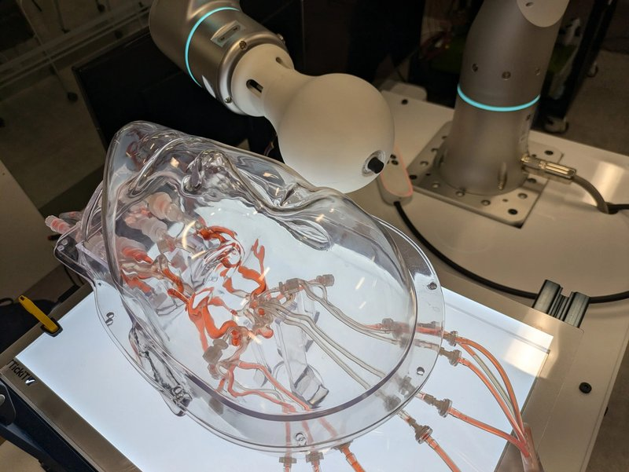

Magnetic navigation · millispinner_wu2024
Milli-spinner
Magnetic milli-spinner (untethered)

1 / 6


- Family
- Magnetic navigation (magnetic-navigation)
- Devices
- untethered 2.5 mm OD hollow spinner with helical fins and slits, in 3.5 mm ID tubes
- Degrees of freedom
- rotating magnetic field from Helmholtz coils; six-axis robot arm holding a permanent magnet for navigation
- Push
- Magnetic
- Twist
- Field direction
- Tested up to
- Phantom
- Sim-to-real
- None found — No simulation-trained controller found for this robot.
Testing
- Highest level
- Phantom
- What was tested
- vascular phantoms; in-situ embolisation of an aneurysm model filled with anticoagulated porcine blood; no animal
- Key numbers
- 23 cm/s in tubular environment (abstract); stable spinning needs 15-20 mT; 56.4 cm/s predicted by CFD at 9.6k rpm
Mechanism
- Push (translation)
- magnetic
- Twist (rotation)
- spinning in rotating field (up to 8.4k rpm tested)
- Device range
- untethered
- Target anatomy
- cerebral and general vasculature; phantoms, porcine blood aneurysm model
Sensing and interface
- Force sensing
- none
- Leader and haptics
- no
- Imaging
- fluoroscopy-guided in phantom
- Sterility
- N.R.
Size
- Footprint (mm)
- N.R.
- Mass (kg)
- N.R.
Simulation
- Simulation model
- CFD of swimming speed compared with experiment (wu2024_millispinner, full)
- Sim-trained controller
- none found
Versions
- Lineage
- arXiv 2410.21112; optimisation follow-up Adv. Robotics Res. 2026 (arXiv 2601.01319, abstract not read)
Sources
- Magnetic Milli-spinner for Robotic Endovascular Surgery · link [wu2024_millispinner]
Notes
- Notes
- Untethered: no bedside drive and no tip actuation, kept as a magnetic-navigation comparison point.
This record
- Read level
- full — full (abstract and results by grep)
- Picture
- Stanford Robotics Center demo page (src.stanford.edu/demo/magnetic-milli-spinner-for-robotic-endovascular-surgery-launch), image "magnetic millispinner (2).jpg" at 2500w (UR arm with rotating magnet over the head phantom) — licence: web image (Stanford Robotics Center), terms not stated; grade A
- Picture changes
- WebP converted to PNG; no crop, no edits; not upscaled
- Found by
- actuated-tip: Search of actuated-tip and magnetic devices.
- Data
- JSON · YAML:
records/robots/millispinner_wu2024.yaml - Correction
- Suggest a correction [repository not created yet]